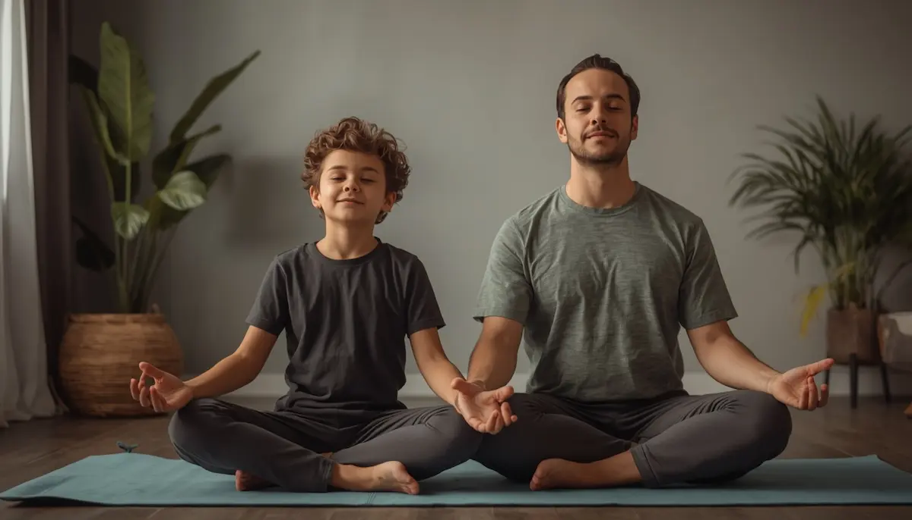

Técnicas de respiración y regulación emocional
Dotar a los niños de recursos prácticos para gestionar el estrés cotidiano les otorga autonomía y herramientas de autocontrol muy valiosas. A través de juegos de respiración consciente —como imaginar que olemos una flor y soplamos una vela—, el sistema nervioso activa su respuesta parasimpática, reduciendo de inmediato la frecuencia cardíaca y la tensión muscular.
Herramientas lúdicas para liberar la tensión acumulada
Incorporar dinámicas sencillas en la rutina diaria facilita la canalización de la energía nerviosa:
1. La técnica de la relajación muscular de la marioneta: Tensar y relajar por grupos los músculos del cuerpo para liberar el estrés físico acumulado.
2. El frasco de la calma: Utilizar elementos visuales donde los brillos que descienden despacio ayudan a focalizar la atención y aquietar la mente.
"Enseñar técnicas de respiración al niño no es un ejercicio abstracto, sino regalarle un superpoder interno para calmar su propia mente."
Practicar la regulación emocional con constancia
Entrenar estos recursos en momentos de tranquilidad garantiza que el menor pueda recordarlos y aplicarlos de forma intuitiva cuando aparezca la ansiedad.
➔ Volver al índice de Ansiedad infantil